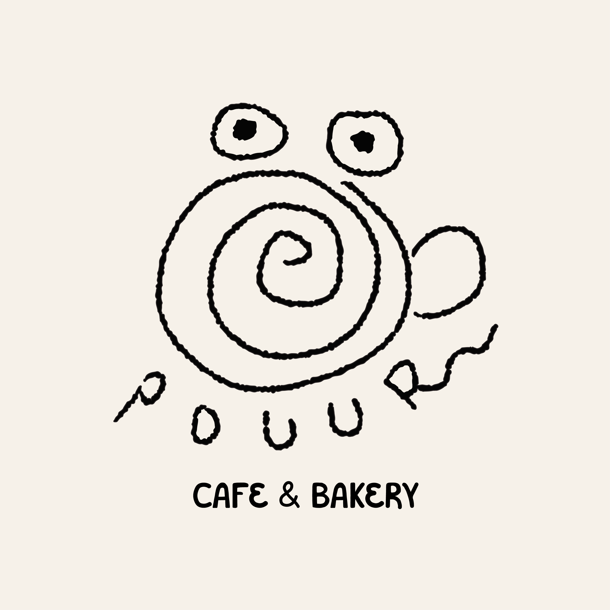

Pouur
A cozy café brand featuring a playful, hand-drawn style logo.


A café brand with a logo designed around the acronym MS2.
A cozy café brand featuring a playful, hand-drawn style logo.
"A playful and eye-catching logo for a cookie shop named 'Munch'd.' Imagine the brand name emerging from an 'M'-shaped cookie, with the 'M' doubling as both the cookie and the brand's initial. Add a clever bite mark to the 'M' to convey the irresistible crunch of a freshly baked treat."